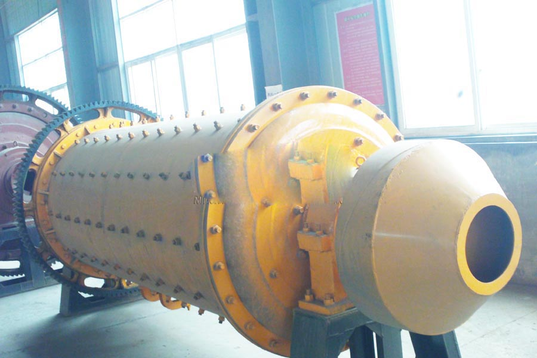

Construction waste crushing production line

Mobile construction waste crushing station for urban construction waste crushing.
ball mill for cement
ball mill for cement. Rod mill, rod mill principle, rod mill manufacturer, rod mill is a device for grinding the ore. Rod mill can hold different grinding into work according to different working conditions, ... river gravel crusher hydraulic rock crusher machine ore crushing machine pebble crushing mill processing equipment.
Ore rod mill, rod mill grinding machine, rod mill river gravel, river gravel Sander, rod mill has dry and wet rod mill rod mill in two forms to choose from, users can according to their actual situation be selected.

Sand Making Production Line
artificial sand making lineThe complete set of sand making line consists of river gravel rod mill, vibrating feeder, jaw crusher,impact crusher,vibration screen,belt conveyor and central drive-by-wire equipment. The designed capacity is 50-500t/d. In order to meet the various need of customers, it could be matched with cone crusher, and dust removing equipments etc. The sand gravel production line could be used in work of scleroid, limestone, moorstone, whinstone and many kinds of skeletal materials and artificial sand making. It is widely applied in hydroelectric power, construction material, highway and city construction industry. Different equipment arrangement and process flow will fulfill the special requirement of different client.
Artificial Sand Making Flow Chart
Namibia river gravel rod mill manufacturer. The raw material is transferred to jaw crusher for primary crushing by vibrating feeder, then the crushed materials whose size is larger than 40 mm are transferred to vsi crusher through belt conveyor for secondary crushing. The materials crushed will be transferred to the vibrating screen. The materials with suitable size will be transferred to vsi crusher, after being washed by sand washers, then clean final products will be discharged. The others with unsuitable size will be screened from vibrating screen, then will be transferred to the vsi crusher, this forms a closed circuit manifold cycles. Sizes of final products will be according to our customers’ requirements. If it is the dry process, the classifier and deduster will be attached according to you requirement.
River gravel Rod mill used for making artificial sand River gravel Rod mill is used for making artificial sand or manufactured sand instead of natural sand, from stones or rocks. In the sand making plant, it is used with other sand crushing machine in fine and medium size crushing of rocks, stones, minerals for building sand, aggregate and concrete. River gravel Rod mills machine are of high efficiency and high performance crusher, low in maintenance and operating cost. The final artifical sand is cubic with grounded edges. Artificial sand and aggregate is used in preparing good quality concrete for building and construction purpose, so the sand particle must be equiexed cuboidal and glommed edges.
Sand rod mill, rod mill, rod milling machine sand, river gravel sand machine, rod mill rod mill Sand Sand presentation (sand making machine) is widely used, its performance has reached international advanced level, is the most effective, practical and reliable gravel machine, sand and gravel industry is widely used in construction sand gravel equipment.
Namibia river gravel rod mill supplier. High-quality rod mill, rod mill, river pebbles Sand, Sand rod mill from the feeding part, discharging Department, Rotary Department, Transmission Division (reducer, small transmission gear, motors, electrical control) and other major components. High-quality rod mill, rod mill, river pebbles Sand
Leave Me A Message, Now
If you have any questions regarding equipment prices, production line configuration or other problems, you can send a message to us, we will contact you soon.